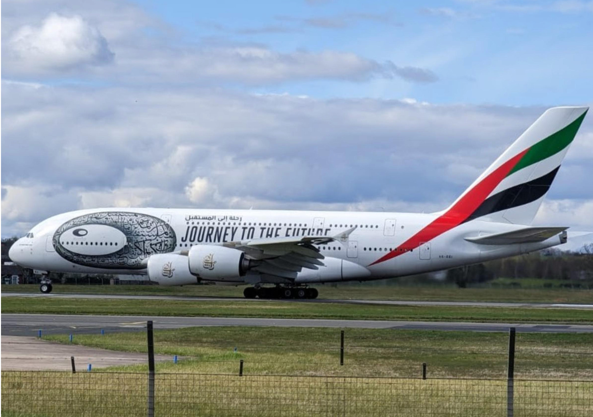

Scotland · Aviation · Photography
SCOTLANDLOOK UP.
A shared visual archive built by Scottish aviation enthusiasts — the aircraft, the light, the movements and the moments worth keeping.
First collectionArran Gordon · 7 photographs
The crewMohammed · Ellis · Arran
Scottish.aero / photographic archiveScroll to explore ↓
SCOTTISH.AERO · AIRCRAFT · AIRPORTS · PHOTOGRAPHERS · KEEP LOOKING UP ·SCOTTISH.AERO · AIRCRAFT · AIRPORTS · PHOTOGRAPHERS · KEEP LOOKING UP ·
From the archive
The aircraft are the subject. The photograph is the story.
Browse movements captured by the Scottish.aero crew. Every image keeps its photographer attached to it from upload to archive.
Selected by the group
Photo of the week.
One frame brought forward from the archive.
The crew
Three photographers. One archive.
Each upload is automatically credited to the photographer who submitted it.
Explore Scotland
Start with an airport.
Filter the archive by Scotland's major airports as the collection grows.
Scottish.aero